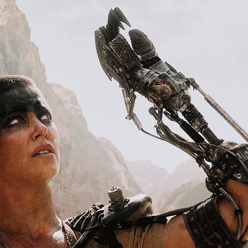
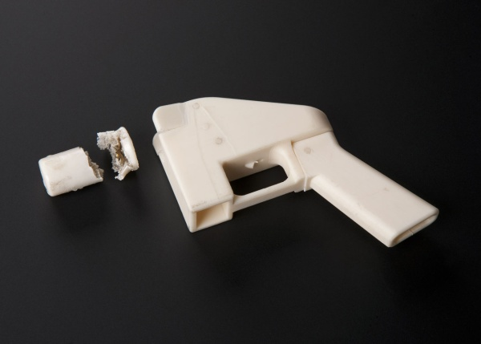
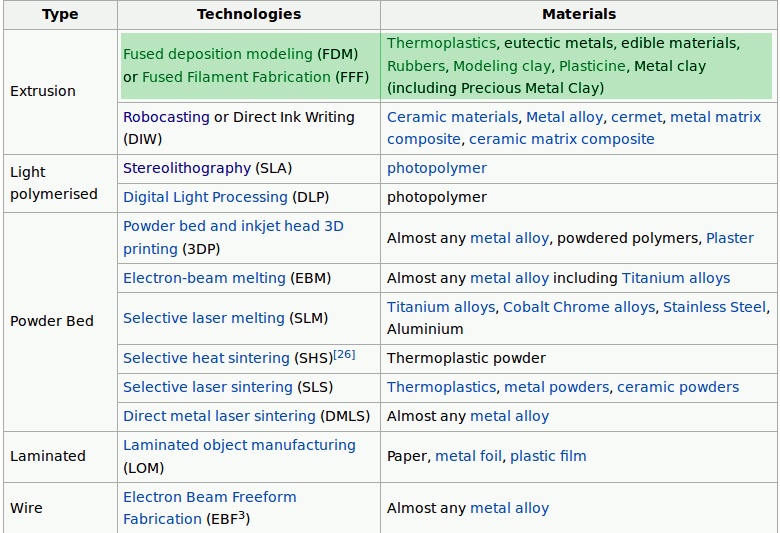
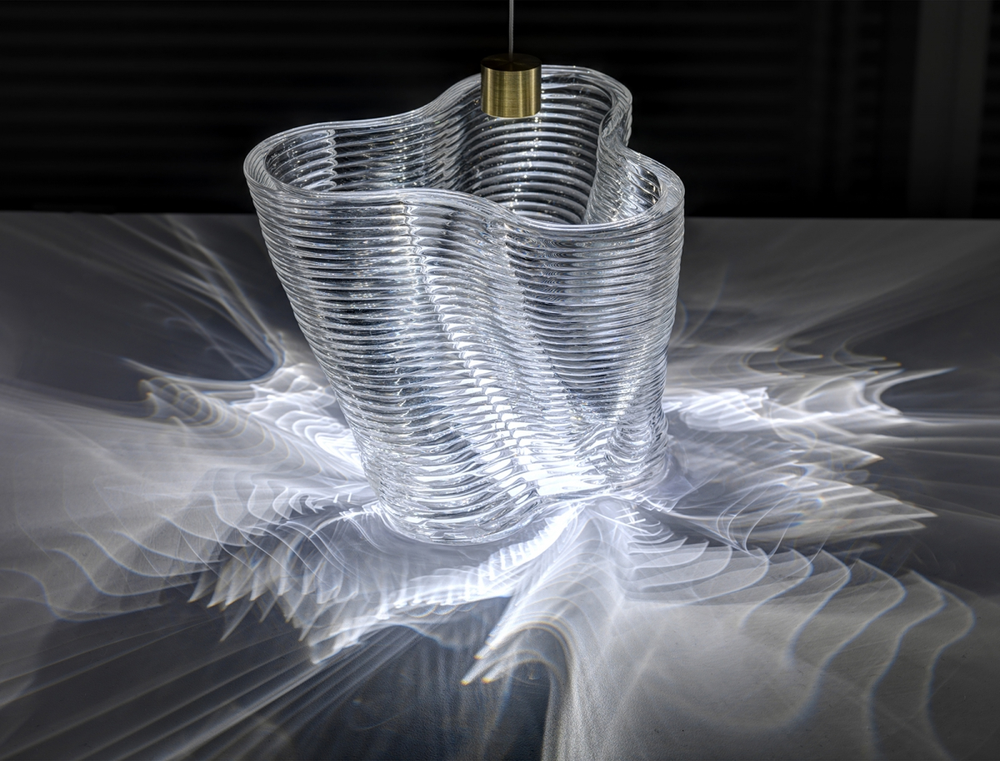
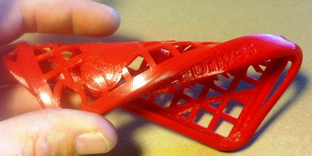

תלתפסת לכל פועל!
עירא אברמוב, 2020
https://ira.abramov.org/3DPadventures-2020
שתי הגדרות
Additive Manufacturing
Computer Numerical Control
Self Replicating
John Von Neumann - 1940s

NASA 1980
Self Replicating
NASA 1980
On ISS
NASA 2015
On Mars
NASA 20?? (we hope)

On Mars
NASA 20?? (we hope)
ואז? אולי להפוך אסטרואיד לטלסקופ...
Crystalline manufacturing
1947

ST-TOS Food Synthesizer
1960s
1970 - Niven's Ringworld
"The food slot gave him flat reddish-brown bricks. Six times he dialed a brick, took a bite and dropped the brick into the intake hopper. Each brick tasted different, and they all tasted good.
At least he would not get bored with eating. Not soon, anyway.
But if they could not find plants and water to shovel into the intake hopper, the food slot would eventually stop delivering bricks.
He dialed a seventh brick and ate it."
ST-TNG Replicator
1980s


Replicator Parodies
Lexx, HHGTTG

Matter Compilers
Post scarcity but inequality via DRM
Printing is kept by the elite/government for control
Creative, disruptive and copyright nightmare for corporations
Printing is everywhere, and is boring
ועוד למעוניינים
Transmetropolitan, by Warren Ellis
Voyage from Yesteryear, by James P. Hogan
Mechanical Mice by Maurice A. Huigi
72 Letters, by Ted Chiang
A Fire Upon the Deep, by Vernor Vinge
The Peripheral, by William Gibson
Distress, by Greg Egan
ועוד למעוניינים
Luna, by Ian McDonald
Aurora, by Kim Stanley Robinson
Great North Road, by Peter F. Hamilton
Pushing Ice, by Alastair Reynolds
Hardwired, by Walter John Williams
"grey goo": Bloom, Prey, and Recursion.
Movies: Darkman, Fifth Element, Prometheus, biological printing etc
יישומים
מהירות אספקה
התאמה אישית
מחיר לסדרות קטנות
מחזור פיתוח קצר
מבנים פנימיים, צורות וטקסטורות שאי אפשר לייצר ביציקה
סביבות מרוחקות
סודיות
תותבים

תותבים
תותבים

איברים להשתלה
איברים להשתלה

איברים להשתלה
מבנה חומר מיוחד

בניינים טרומיים או מודפסים בשטח

בניינים טרומיים או מודפסים בשטח

בניינים טרומיים או מודפסים בשטח

בניינים טרומיים או מודפסים בשטח

בניינים טרומיים או מודפסים בשטח

בניינים טרומיים או מודפסים בשטח
WikiHouse

בניינים טרומיים או מודפסים בשטח
בניינים טרומיים או מודפסים בשטח

בניינים טרומיים או מודפסים בשטח
תרופות
אופנה

אופנה
אופנה
אמנות
אמנות
נגמר הזמן
דמיינו פה מכוניות, מנועים רקטיים, עצמות טיטאניום, עגילים, כלי עבודה, עוד ועוד אמנות וצעצועים...שאלות חוק
סטטוס נוכחי: בלבול ומבוכה
סטטוס נוכחי: התעלמות וזלזול

לקריאה נוספת: Hackaday, Wired, The Intercept
סטטוס נוכחי: עצבים וחוסר אונים
Stereo Lithography
1984

Stereo Lithography
1984
Stereo Lithography
2015

Powder

Powder

Powder
עוד טכנולוגיות שלא נדבר עליהן
FDM - Fused Deposition Modeling
- (אם החומר קשה, הפוך אותו לצמיגי)
- קח חומר צמיגי
- זוז לאיפה שאתה רוצה שיתמצק
- שים שם חומר
- חזור על התהליך
- מיכל חומר רך ומשאבה
או
חומר קשה בצורת פתיל וראש ממיס - מנועי Step
- כמה חיישנים (מיקום וטמפרטורה)
- מוח פוזיטרוני
נרי אוקסמן, MIT
נרי אוקסמן, MIT
חומרה פתוחה - RepRap
2005 - 2008 Darwin

2005 - 2008 Darwin

2009 Mendel

Prusa
Prusa
Prusa
Arduino Uno

Arduino Mega

Arduino Mega + RAMPS

Arduino embedded
One Arduino to rule them all
- ציר X
- ציר Y
- ציר Z
- ציר E
- חימום ראש
- חימום מצע
- כמה חיישנים
- מוח לחבר את הכל
חומרים
מה כבר ביקשנו?
- נזיל עד ראש ההדפסה
- מתקשה מהר מיד אחרי ההדפסה
- נדבק למצע אבל לא חזק מדי
- לא מתכווץ בהתקררות
- מינימום הפסד חומר
- לא שברירי מדי
- תכונות אחרות בהתאם למטרה - קל, חזק, גמיש/קשה, צבעוני, ניתן למחזור, עמיד למאכל או כימיכלים.
חומרים
במה נדפיס...
- פלסטיק / שרף / פולימרים אורגניים
- גומי
- סוכר / חלבון ביצה / שוקולד
- שעווה
- חימר / בוץ
- מתכות
- זכוכית
- עץ?
- בעתיד: תאי גזע, מתכת זכוכית, חלבונים...?
חומרים נפוצים להדפסה בייתית
| PLA | ABS |
|---|---|
| אורגני מתכלה/מתמחזר טמפ' נמוכה שקוף גמיש נוח לערבוב תוספים כמעט ללא ריח לא מתכווץ בקירור |
קשיח עמיד לחום ולחות ניתן להחלקה בקלות יחסית |
PLA
Polylactic acid
ABS
Acrylonitrile Butadiene Styrene
חומרים אחרים להדפסה בייתית
- NinjaFlex
- LayWoo-D3
- HIPS, TPE, PETG, PVA, Nylon
- ניסויים משונים שונים עם סיבי פחמן, מתכות ושאר תערובות להרפתקנים
חומרים נפוצים להדפסה בייתית
NinjaFlex

חומרים נפוצים להדפסה בייתית
NinjaFlex
חומרים נפוצים להדפסה בייתית
LayWoo-D3
חומרים נפוצים להדפסה בייתית
LayWoo-D3

חומרים תומכים
PVA - Polyvinyl Alcohol

חומרים מוליכים
מודלים מוכנים להדפסה
Thingiverse, Pinshape, Youmagine, Cults3D and othersתוכנות CAD שונות
Sketch Up, Envisioneer, ZwCAD, RasterVect, FreeCAD, Autodesk 123D, Blender, MeshLab, TinkerCAD, K-3D, 3Dtinאלו רק חלק מהחינמיות/פתוחות
תוכנות CAD פרמטריות
OpenSCAD, Solvespace
סריקה בקצרה

לקנות או לבנות?
פחד מהלחמות, קידוחים והברגות?
פחד מעריכת קוד?
הכינו $1300-$2000
לקנות או לבנות?
סביבות $200-300:
- מוטות פלדה
- מנועים
- ראש "חם"
- מצע מתחמם
- זמן וסבלנות
פשרה: קיט REPRAP
סביבות $400-500:
- נפח הדפסה נאה
- הכנה לראש שני
- תמיכה בשפצורים עצמיים
- מצע מתחמם
- עדיין דורש זמן וסבלנות
דברים לדעת, כלים
- סביבה מאווררת אם רוצים ABS
- Blue Tape
- משטח זכוכית
- אצטון (רק ל-ABS)
- Raspberry Pi כדי להריץ OctoPi
- WebCam לצילום התהליך
- Caliper


למתקדמים:
- לייזר לחריטה
- חיישן מרחק לכוונון אוטומטי
- ראשים מתוחכמים של E3D ודומים לערבוב צבעים או טמפ. גבוהות
- ראשים בקטרים שונים
- בן/בת זוג תומכים ומבינים

שאלות?
iconfestival2015(@)ira.abramov.org
https://ira.abramov.org/3DPadventures